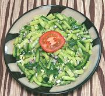

|
Cucumber SambalSouth Africa - Cucumber Sambal | ||||
| Makes: Effort: Sched: DoAhead: |
2 cups ** 3+ hrs Best |
Brought from Indonesia by the Cape Malay, Sambals are popular side dishes in South Africa, especially with curries. | |||
|
|
1 2 2 1 2 1/2 |
# oz cl T t |
Cucumbers (1) Shallot Garlic Jalapeño Vinegar, white wine Sugar |
Make - (35 min + 2-/2 to 12 hrs chill)
|
qsv_samcuk1 210516 sausa105 & inet var -
www.clovegarden.com
©Andrew Grygus -
agryg@aaxnet.com - Linking to and non-commercial use of this page is
permitted.